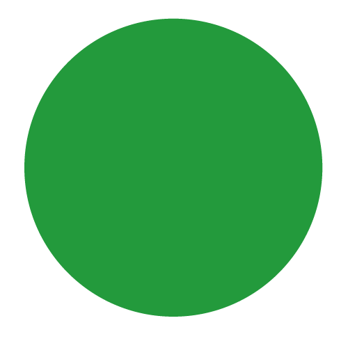
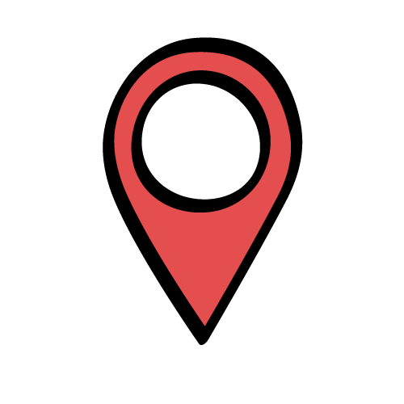
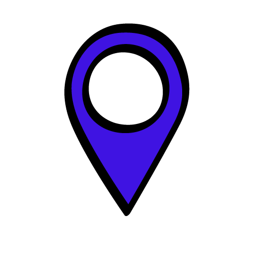

<!DOCTYPE html>
<html>
  <head>
    <title>GeobipMap</title>

    <link rel="stylesheet" href="css/leaflet.css" />
    <link
      rel="stylesheet"
      href="Leaflet.markercluster-1.4.1\Leaflet.markercluster-1.4.1\dist\MarkerCluster.css"
    />
    <link
      rel="stylesheet"
      href="Leaflet.markercluster-1.4.1\Leaflet.markercluster-1.4.1\dist\MarkerCluster.Default.css"
    />
    <script src="js/leaflet.js"></script>
    <script src="Leaflet.markercluster-1.4.1\Leaflet.markercluster-1.4.1\src\MarkerCluster.js"></script>
    <script src="Leaflet.markercluster-1.4.1\Leaflet.markercluster-1.4.1\dist\leaflet.markercluster-src.js"></script>
    <!-- Call the projection biblio -->
    <script src="https://cdnjs.cloudflare.com/ajax/libs/proj4js/2.6.2/proj4.js"></script>
    <script src="https://cdnjs.cloudflare.com/ajax/libs/proj4leaflet/1.0.1/proj4leaflet.js"></script>
    <!-- Add data file a featurecollection of locations in json -->
    <script src="js/data.js"></script>
    <script src="js/boundaries.js"></script>
    <script src="js/moroccoBnd.js"></script>

    <style>
      body {
        padding: 0;
        margin: 0;
      }
      html,
      body,
      #map {
        height: 100%;
        width: 100%;
      }
      .marker-cluster-small {
        background-color: rgba(10, 153, 65, 0.6);
        opacity: 1;
      }
      .marker-cluster-small div {
        background-color: rgba(10, 153, 65, 0.6);
        opacity: 1;
      }
      .marker-cluster-medium {
        background-color: rgba(206, 22, 22, 0.6);
        opacity: 1;
      }
      .marker-cluster-medium div {
        background-color: rgba(206, 22, 22, 0.6);
        opacity: 0.6;
      }
      .marker-cluster-large {
        background-color: rgba(53, 17, 232, 0.6);
        opacity: 1;
      }
      .marker-cluster-large div {
        background-color: rgba(53, 17, 232, 0.6);
        opacity: 1;
      }
      .legend {
        font-size: 16px;
        line-height: 24px;
        color: #333333;
        font-family: "Open Sans", Helvetica, sans-serif;
        padding: 10px 14px;
        background-color: rgba(204, 207, 200, 0.134);

        box-shadow: 0 0 15px rgba(0, 0, 0, 0.2);
        border-radius: 25px;
        max-width: 250px;
        border: 1px solid grey;
      }
      .legend p {
        font-size: 20px;
        line-height: 30px;
      }
    </style>
  </head>

  <body>
    <div id="map"></div>

    <script>
      // Layer declaration
      var gmap = L.tileLayer(
        "http://{s}.google.com/vt/lyrs=s&x={x}&y={y}&z={z}",
        {
          maxZoom: 20,
          subdomains: ["mt0", "mt1", "mt2", "mt3"],
        }
      );
      var osm = L.tileLayer("https://tile.openstreetmap.org/{z}/{x}/{y}.png", {
        maxZoom: 19,
        attribution: "© OpenStreetMap",
      });

      // Map declaration
      var map = L.map("map", {
        center: [33.606204, -7.630979],
        zoom: 6,
        minZoom: 6,
        layers: gmap,
      });
      // Add the Object that contain base layers
      var baseMaps = {
        OpenStreetMap: osm,
        "Google Satelitte": gmap,
      };
      // Add the layer control box
      var layerControl = L.control.layers(baseMaps).addTo(map);
      // add data
      // L.geoJSON(data).addTo(map);

      // Oneachfeature function  pop for each marker
      function onEachFeature(feature, layer) {
        // does this feature have a property named popupContent?
        if (feature.properties && feature.properties.name) {
          layer.bindPopup(
            feature.properties.name +
              "<p>Projet x </p>" +
              " " +
              "<a href=https://example.com target=_blank >Website </a>", //  img link should be aded to the gejson data CSS mochkil same for description
            {
              maxWidth: "auto",
            }
          );
        }
      }
      // add clusters for marrakechdata
      var markersMarrakech = L.markerClusterGroup({
        iconCreateFunction: function (cluster) {
          var count = cluster.getChildCount(); // Number of markers in the cluster

          // Custom style for the cluster icon
          var customClusterIcon = L.divIcon({
            html:
              '<div style="background-color: #30842a; border-radius: 50%;' +
              'width: 40px; height: 40px; display: flex; justify-content: center; align-items: center;">' +
              '<span style="color: white; font-size: 14px;">' +
              count +
              "</span></div>",
            className: "my-cluster", // Add custom class if needed
            iconSize: [40, 40], // Size of the cluster icon
          });

          return customClusterIcon;
        },

        maxClusterRadius: 120,
        showCoverageOnHover: false,
      });
      var markermarrakech = L.geoJSON(dataMarrakech, {
        onEachFeature: onEachFeature,
      });
      markersMarrakech.addLayer(markermarrakech);
      map.addLayer(markersMarrakech);

      // add clusters for Casablanca Data
      var markersCasablanca = L.markerClusterGroup({
        iconCreateFunction: function (cluster) {
          var count = cluster.getChildCount(); // Number of markers in the cluster

          // Custom style for the cluster icon
          var customClusterIcon = L.divIcon({
            html:
              '<div style="background-color: #30842a; border-radius: 50%;' +
              'width: 40px; height: 40px; display: flex; justify-content: center; align-items: center;">' +
              '<span style="color: white; font-size: 14px;">' +
              count +
              "</span></div>",
            className: "my-cluster", // Add custom class if needed
            iconSize: [40, 40], // Size of the cluster icon
          });

          return customClusterIcon;
        },

        maxClusterRadius: 120,
        showCoverageOnHover: false,
      });
      var markerCasablanca = L.geoJSON(dataCasablanca, {
        onEachFeature: onEachFeature,
      });
      markersCasablanca.addLayer(markerCasablanca);
      map.addLayer(markersCasablanca);

      // add clusters for tanger data
      var markersTanger = L.markerClusterGroup({
        iconCreateFunction: function (cluster) {
          var count = cluster.getChildCount(); // Number of markers in the cluster

          // Custom style for the cluster icon
          var customClusterIcon = L.divIcon({
            html:
              '<div style="background-color: #30842a; border-radius: 50%;' +
              'width: 40px; height: 40px; display: flex; justify-content: center; align-items: center;">' +
              '<span style="color: white; font-size: 14px;">' +
              count +
              "</span></div>",
            className: "my-cluster", // Add custom class if needed
            iconSize: [40, 40], // Size of the cluster icon
          });

          return customClusterIcon;
        },

        maxClusterRadius: 120,
        showCoverageOnHover: false,
      });
      var markerTanger = L.geoJSON(dataTanger, {
        onEachFeature: onEachFeature,
      });
      markersTanger.addLayer(markerTanger);
      map.addLayer(markersTanger);

      // function that create a clustermarker for a specific data
      /*function addClusterGroup(data) {
              var markers = L.markerClusterGroup({
                maxClusterRadius: 120,
                showCoverageOnHover: false,
              });
              var marker = L.geoJSON(data);
              markers.addLayer(marker);
              map.addLayer(markers);
            }
            // Add markercluster for each region/city
            addClusterGroup(dataTanger);
            addClusterGroup(dataCasablanca);
            addClusterGroup(dataMarrakech);*/

      //L.geoJSON(boundaries).addTo(map);
      L.geoJSON(boundaries, {
        style: function (feature) {
          return {
            color: "grey", // Outline color
            weight: 2, // Outline weight
            opacity: 1, // Outline opacity
            fillColor: "Grey", // Fill color
            fillOpacity: 1, // Fill opacity
          };
        },
      }).addTo(map);
      // add moroccan boundary in green
      L.geoJSON(marocLimit, {
        style: function (feature) {
          return {
            color: "green", // Outline color
            weight: 4, // Outline weight
            opacity: 1, // Outline opacity
          };
        },
      }).addTo(map);
      //add legend
      var legend = L.control({ position: "bottomright" });
      legend.onAdd = function (map) {
        var div = L.DomUtil.create("div", "legend");
        div.innerHTML =
          '' +
          "<p style=display:inline-block>Groupe de Projet</p>" +
          '' +
          "<p style=display:inline-block >    Lot de terrain</p>" +
          "<br>" +
          '' +
          "<p style=display:inline-block>  Appartement  </p>";
        return div;
      };
      legend.addTo(map);
    </script>
  </body>
</html>
